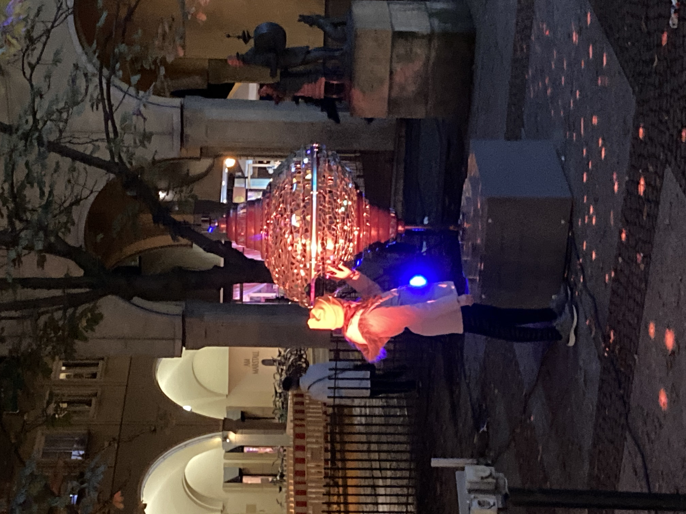
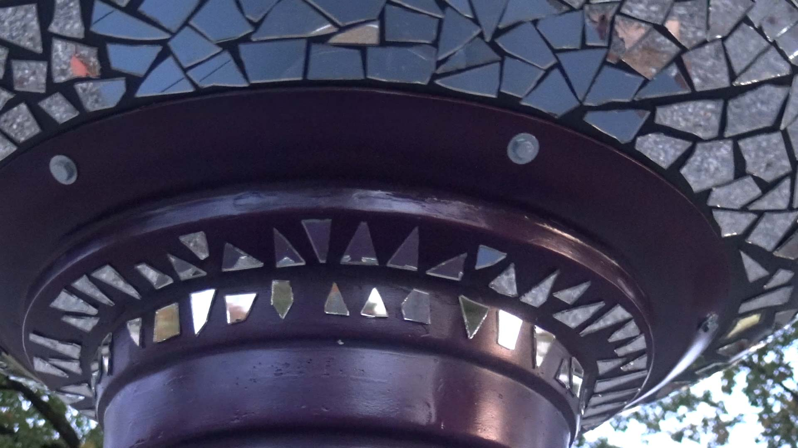
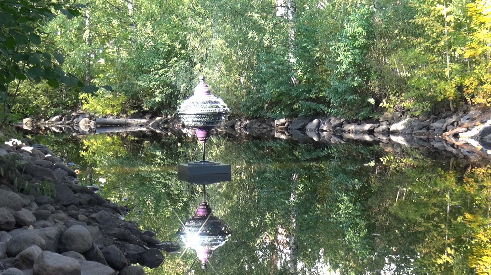

This humming top is truly giant and brilliant, and its rotating mirror mosaic creates a fascinating play of reflections. The detailed mirror mosaic represents inner reflections, such as individual beliefs and values. The reflections cast by the mosaic represent external reflections — a person's daily actions. The humming top invites you to take time to reflect on your own beliefs and to examine whether they align with your daily actions.
The installation is interactive, with toy spinning tops for children (and adults) to play with. It is called 'Fragmented Appearances' because of the different appearances of the humming top depending on the light during the day or night. The soundscape is based on manipulated sounds of spinning tops and sounds of breaking and vibrating glass.
The shape of the installation is inspired by the giant humming tops of the Dutch composer Peter Schat (1935–2003), used in his composition 'To You' (1970–'72). I renovated these tops and used them for my performance 'Humming around and around…'; one of them can now be seen in the Rijksmuseum in Amsterdam.
Deze bromtol is echt gigantisch en briljant en het roterende spiegelmozaïek creëert een fascinerend spel van reflecties. Het gedetailleerde spiegelmozaïek vertegenwoordigt innerlijke reflecties, zoals individuele overtuigingen en waarden. De reflecties van het mozaïek vertegenwoordigen externe reflecties: de dagelijkse handelingen van een persoon. De bromtol nodigt uit om tijd te nemen en te reflecteren op jouw eigen overtuigingen en te onderzoeken of deze passen bij jouw dagelijkse handelingen.
De installatie is interactief met speelgoed-bromtollen waar kinderen (en volwassenen) mee kunnen spelen. De installatie heet 'Fragmented Appearances' vanwege de verschillende verschijningsvormen van de bromtol, afhankelijk van het licht overdag of 's nachts. De soundscape is gebaseerd op gemanipuleerde geluiden van bromtollen en geluiden van brekend en trillend glas.
De vorm van de installatie is geïnspireerd op de gigantische bromtollen van de Nederlandse componist Peter Schat (1935–2003) die hij gebruikte in zijn compositie 'To You' (1970–'72). Deze tollen heb ik gerenoveerd en gebruikt voor mijn voorstelling 'Humming around and around…', waarvan er nu één te zien is in het Rijksmuseum van Amsterdam.